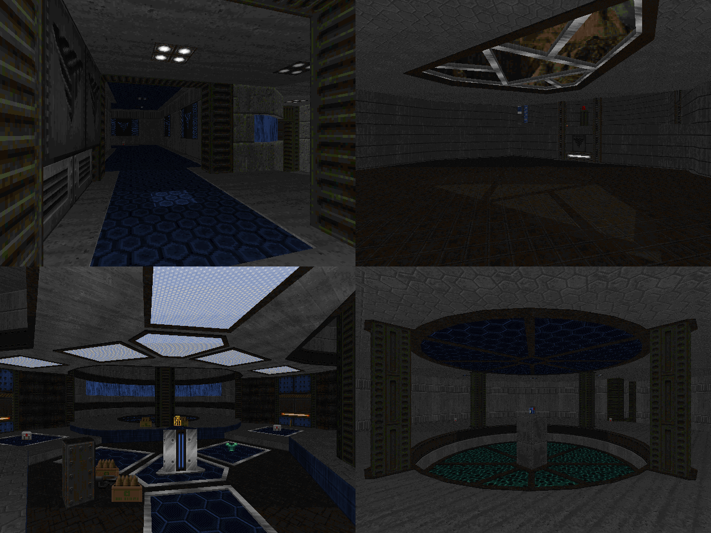

DOWNLOAD LINKS


| Year | 2024 |
| IWAD | Doom II |
| Source port | Boom/UMAPINFO-compatible |
| Game mode(s) | Single-player |
| Map(s) contributed | MAP06 |
Doomium II is a 36-level Boom megawad that came to life as a community project hosted by fai1025. A
sequel to the first Doomium, the focus of the project was on making maps with "frantic action". The maps are split
into episodes of 5 levels each (plus a secret level), with each episode having its own distinct theme.
My contribution, MAP06, opens the brutalism episode of Doomium II. It's a map named "Concrete Flow", and it takes
place in a quasi-techbase with water running in the walls. Gameplay here leans towards hectic, with the player having
to scramble a little for their ammo early on, and the map even contains an arena fight or two.
This map admittedly isn't one of my personal favorites. From a gameplay perspective, it's one of my better ones,
but not so much visually. I was going to spruce up the visuals in an update but ultimately never did. Oh well, at
least it was fun to make.